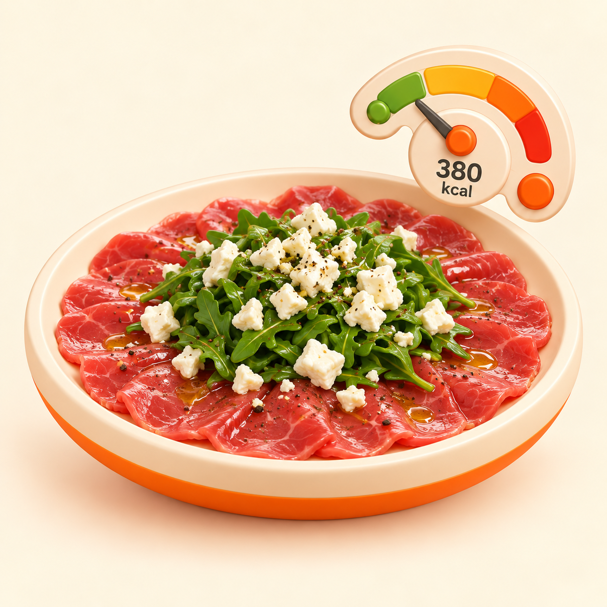
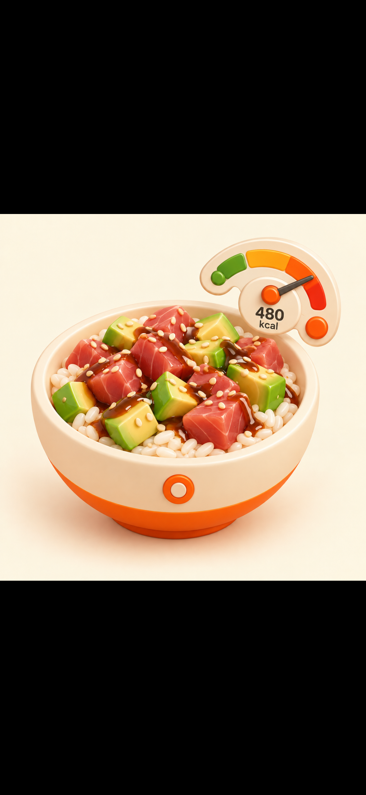
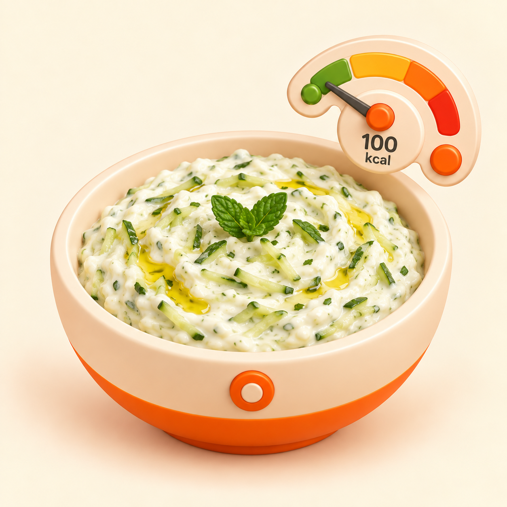

FROZEN PLATE
r1 · Carpaccio
380 kcal · owner + QA PASS
s02 ha superato approvazione owner, ottimizzazione lossless e QA tecnico. Nessun batch o deploy.

380 kcal · owner + QA PASS

490 kcal · owner approved

100 kcal · owner + QA PASS